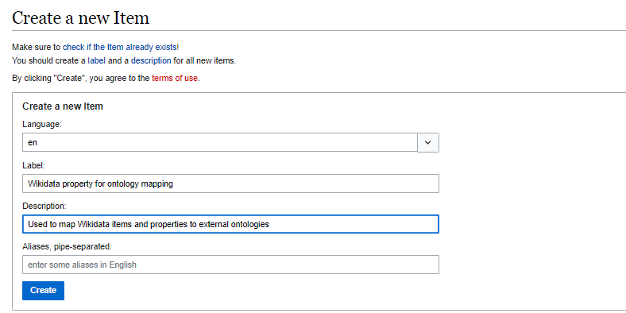
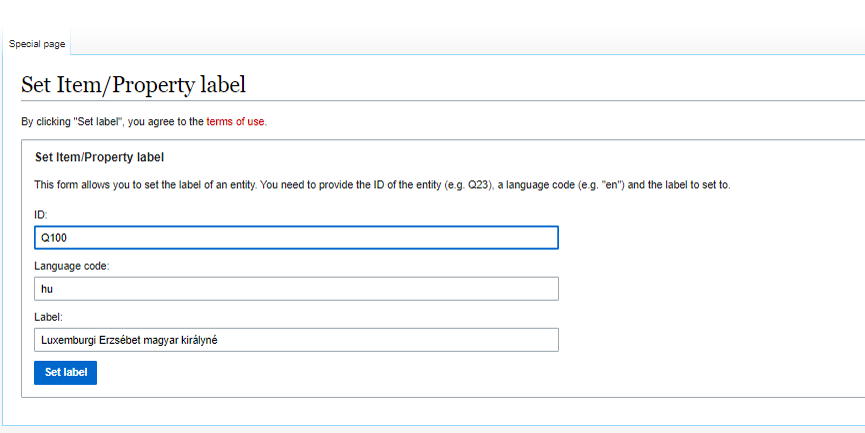
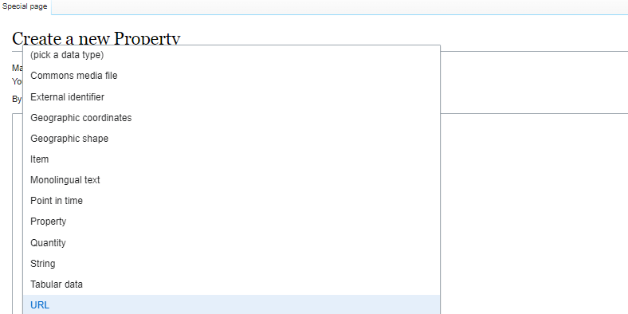
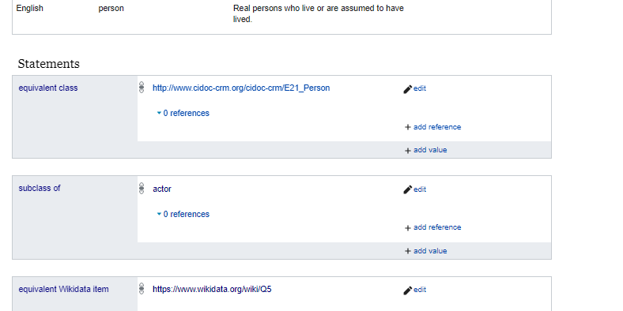
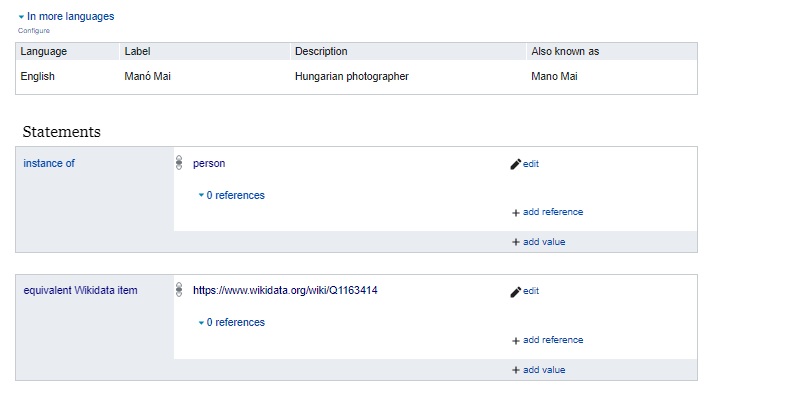
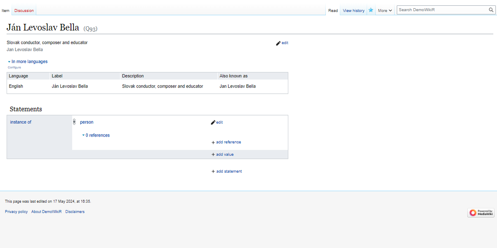
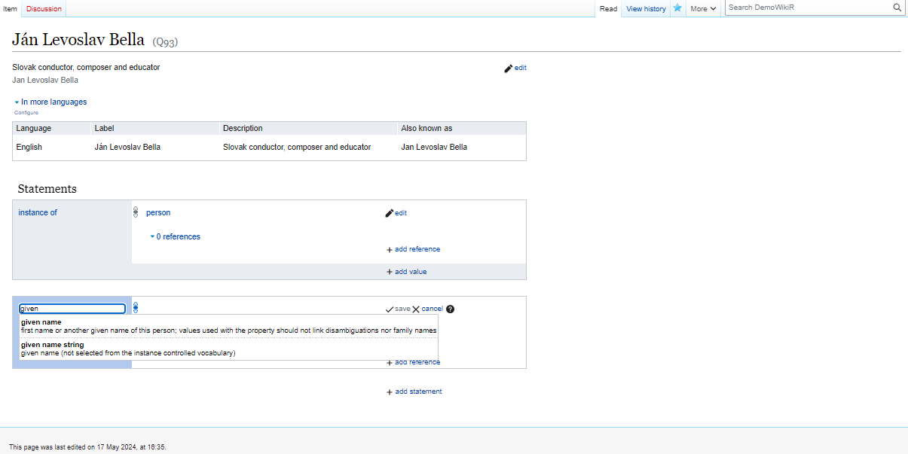
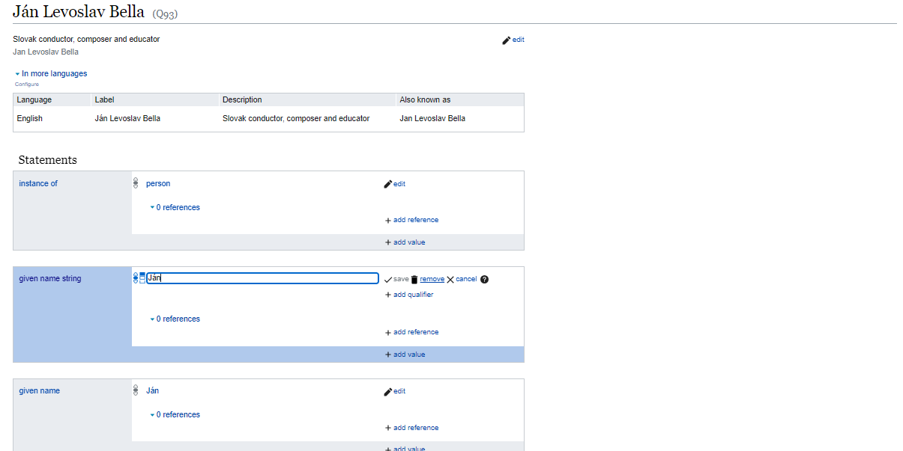

4 Wikibase and Enterprise Knowledge Graphs
In the previous chapter, we introduced the idea of an open knowledge graph that connects knowledge curated by many people and organisations.
We have shown how valuable an open knowledge graph, like Wikidata, can be in reducing a private database’s data curation, data control, and other related costs. Can we rely on similar knowledge graphs that are more specific to our professional domain and have more nuanced information than Wikidata? What if we want to keep music rights management databases or music distribution inventories updated and prefilled with data? Do we want to connect reliable, science-based data to our internal ESG systems?
Private enterprise knowledge graphs are usually made for precisely this purpose. Wikidata was originally created to support the increasingly automated corrections of the vast, open-source Wikipedia encyclopedias.
Encyclopedias have a limit of notability: they do not want to store information about every human living on Earth, but only those whose lives and work are notable enough to be interesting for the general public and who are living anyway in the public eye. (It would be unethical and even illegal to connect personal data about private individuals who do not wish to go out to the public space.) A private knowledge graph can connect information about all writers as rightsholders or their heirs, if they are deceased, to pay out royalties wherever they live.
4.1 Wikibase
Wikibase is the software that runs Wikidata. Wikidata evolved into a central hub on the web of data and one of the largest existing knowledge graphs, with more than 100 million items maintained by a community effort. Since its launch, an impressive 1.3 billion edits have been made by 20,000+ active users. Today, Wikidata contains information about a wide range of topics such as people, taxons, countries, chemical compounds, astronomical objects, and more. This information is linked to other key data repositories maintained by institutions such as Eurostat, the German National Library, the BBC, and many others, using 6,000+ external identifiers. The knowledge from Wikidata is used by search engines such as Google Search, and smart assistants including Siri,Alexa, and Google Assistant in order to provide more structured results.
While one of the main success factors of Wikidata is its community of editors, the software behind it also plays an important role. It enables the numerous editors to modify a substantial data repository in a scalable, multilingual, collaborative effort.
Wikibase is a software system that help the collaborative management of knowledge in a central repository. It was originally developed for the management of Wikidata, but it is available now for the creation of private, or public-private partnership knowledge graphs. Its primary components are the Wikibase Repository, an extension for storing and managing data, and the Wikibase Client which allows for the retrieval and embedding of structured data from a Wikibase repository. It was developed by Wikimedia Deutschland.
The data model for Wikibase links consists of “entities” which include individual “items”, labels or identifier to describe them (potentially in multiple languages), and semantic statements that attribute “properties” to the item. These properties may either be other items within the database, or textual information.
Wikidata itself is a gigantic Wikibase instance. Their user interface is similar, but depending on what the administrator of your Wikibase instance allows you to do, you are likely to have more freedom to edit certain elements, like properties, than on Wikidata. Wikidata must protect the integrity of one of the world’s largest knowledge systems, and does not allow editing access to certain elements.
Wikibase has a JavaScript-based user interface, and provides exports of all or subsets of data in many formats. Projects using it include Wikidata, Wikimedia Commons,[5] Europeana’s Eagle Project, Lingua Libre,[6] FactGrid, and the OpenStreetMap wiki.[7]
4.2 Populating a Wikibase
Wikibase is an open knowledge base or universe when installed. We start populating it with some items. In the Wikidata data model, items are similar to things, and classes are also defined as items.
A sandbox instance is a Wikibase instance designated for learning, testing, experimenting. Reprex has created several sandbox instances for onboarding our data curators and for educational purposes. Please see Chapter 5 for getting an account on such an instance.
4.2.1 Creating entities or items


Suppose you want to make an item or property entity multi-lingual. In that case, you must add at least a new label or description via the Special Pages on the Graphical User Interface (i.e., using your browser.) If you work with our import-export tool or the API, you can set labels and descriptions in several languages in one command.

4.2.2 Creating properties
Properties are describing relationships between items. You can create them similary to items, but navigating to Special pages ➔ Wikibase ➔ Create a new property (not item). Properties are far more important than items, because they define the rules of the knowledge base. The type of relationships will allow our artificial intelligence applications to make deductive or inductive new discoveries and expand our knowledge.
In our introduction to Wikidata (Section 3.1), you found exactly the same graphical interface to work with items as on Wikibase, but on the public Wikidata instance of Wikibase, you cannot find an add new property button.
On Wikidata, you are not allowed to create new properties: they are created after a consultation with the Wikidata community. The addition of properties determines who the knowledge graph will work in the future.
Needless to say that when you work with a Wikibase instance, you should be also very careful with properties. While changing items usually requires domain-specific knowledge, which you likely possess if you work on an instance, the property sometimes requies knowledge about the information or data model of the instance.
Not always: some properties are self-explanatory and very easy to create and maintain. For example, the adition of identifiers to other data systems is straightforward. Adding properties that define family relationships (which have their logical rules) requires more careful planning.

Properties have expected data types:
Use a URL for connecting to other ontologies, data models (and add persistent URIs)
Use item for entities that you want to weave together in the knowledge graph.
Use literal values like string that for data that will be entered, but not will be placed on a graph.
For example, if you add Mai Manó as a string, it will be recorded, but you cannot connected with the works of Mai Manó, the photographer. If you create an entity (item) for Mai Manó, you will be able to link this entity to the works of Mai Manó, to his children, to his house.
4.2.3 Adding statements
Now we are ready to start to build an intelligent knowledge base. We connect the person item in our Wikibase via the equivalent class property to the E21_Person definition of the CIDOC CRM. This will allow us to export our knowledge base to a standard museological graph.

In this case, the equivalent class property only accepts URLs. The URI of the CIDOC definition of E_21 Person takes the format of a URL so you can enter it here, but a simple string like E21 would not be allowed.
Adding statements is exactly the same procedure on Wikibase as on Wikidata (which is a gigantic Wikibase instance itself.) The only difference is that you can only use properties (or items) that exist on the Wikibase instance or Wikidata. Because Wikibase instances usually should have a different knowledge coverage, some properties and items are not available on others.
4.2.4 Synchronize with Wikidata
In our case, we want to be able to pre-fill data from Wikidata, and then, eventually suggest changes in the public Wikidata. This requires adding statements about Wikidata equivalent properties and items when applicable.


Let us put this all together and create a bibliographic entry. Here we will use a slight deviation from CIDOC, and use the instance of property (equivalently defined in our Wikibase with Wikidata) for class inheritance. When we create a new entity (Manó Mai), we will define this entity as an instance of a person. Persons have birth date, family members, they can create new creative works. In ontologies and in RDF we call these abstract concepts classes.
 We immediately record that our entries about Manó Mai, the great photographer, should be talking about the same person as Wikidata’s Q1163414 document item.
4.3 Good practices
Let us consider the creation of an entry for the Slovak composer, 
4.3.1 Use of name strings or controlled vocabularies
In this case, we would like to code the given name property to Ján. We can do it in two ways: - add the string Ján without further control, or, - add Ján as a controlled string (an item datatype on Wikibase.)
 Unless we can import comprehensive datasets, usually data enrichment is a second step. In such cases, we import first to a name string property given names, locations, venue names, and other important nodes of our knowledge graph.
 The use of controlled vocabularies makes filtering the database easier, and reduces the likelihood of errorneous entries. In the Wikidata data model, we can add a taxonomical class to such controlled vocabulary items. By coding
The use of controlled vocabularies makes filtering the database easier, and reduces the likelihood of errorneous entries. In the Wikidata data model, we can add a taxonomical class to such controlled vocabulary items. By coding Ján as an instance of the Slovak make given name, we can later search composers or persons easer by this name given name or we can infer that the composer was born as a man.

In this case, we would like to code the given name property to Ján. We can do it in two ways: add Ján as a controlled string (an item datatype on Wikibase) add the string Ján without further control.
Coding Ján. to Ján must be done with the knowledge of the data curator. We can only make this coding if we know that the string Ján came from a given name (or equivalent) database table column, if indeed it comes from a database of Slovak persons. This is one of the reasons why our bots, i.e., automated importing tools will map given names first to the given name string property.
Similar name string properties:
event of the first performance: Prague Spring International Music Festival is a repeating event, and it has its own entity among music festivals.
4.4 The EU Knowledge Graph

Because of the success of Wikidata, many projects and institutions are looking into Wikibase, the software that runs Wikidata. They aim to reuse the software to construct institutional or cross-institutional, domain-specific knowledge graphs. Several factors make Wikibase attractive:
Our OpenCollections instances are prepared with a similar mindset to the creation of the EU Knowledge Graph↗. We pre-populate a Wikibase instance from Wikidata about many institutional, geographical or biographical facts of the domain (Diefenbach, Wilde, and Alipio 2021), or with elements of the Wikidata data model and its compatibility classes with other ontologies.
4.5 EU Academy Course on Wikibase

Target audience
Policymakers, public administrators, data maintainers, IT professionals.
Learning objectives
Pros and cons of using Wikibase/SMW for your dataspace
Lessons learnt from projects already using Wikibase/SMW instances
Practical know-how about setting up a new Wikibase/SMW from scratch
What should be on Wikidata vs in a local Wikibase/SMW
Comparison between Wikibase and SMW
Offered by
This content is offered by the European Commission. The European Commission is the European Union’s politically independent executive arm. It is alone responsible for drawing up proposals for new European legislation, and it implements the decisions of the European Parliament and the Council of the European Union.